Termodinâmica
Introdução
A Termodinâmica é a parte da Física responsável pelo estudo das transformações e interações existentes entre dois tipos específicos de energia: mecânica e térmica. Nessas transformações, ocorre a mudança de parâmetros específicos, sendo os principais objetos de estudo da termodinâmica. São eles:
- Trabalho: Transferências de energia através de movimento.
- Calor: Energia térmica em trânsito recebida ou concedida pelo corpo.
- Energia interna: Corresponde à soma de todos os tipos de energia das partículas, entretanto, pode-se limitá-la a temperatura do corpo.
SE LIGA!: O sinal negativo (-) para trabalho (t) e calor (Q) indicam que o corpo recebeu (não realizou) e concedeu (não recebeu) cada um deles, respectivamente.
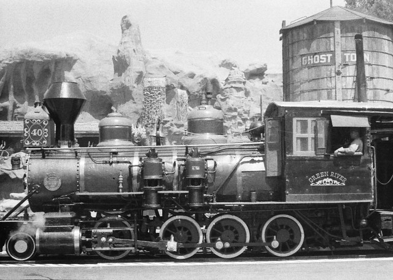Gases perfeitos
Um gás perfeito é um modelo teórico fundamentado em certas leis, que generaliza características de diferentes gases. Foi desenvolvido durante os séculos XVII e XIX, através da contribuição de estudiosos como Robert Boyle, Jacques Charles, Gay-Lussac e Paul Emile Clapeyron. Mesmo sendo uma aproximação do que acontece na realidade, esse modelo se mostra imprescindível no estudo de fenômenos termodinâmicos.
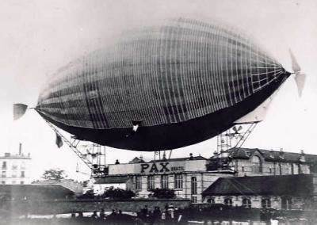Videoaula
Conceitos iniciais
Variáveis de Estado
Número (n): Se refere à quantidade de partículas do gás em um dado espaço, geralmente delimitado. Sua unidade de medida principal é o [mol], cuja unidade equivale a 6,02.10^23 partículas/moléculas.
Volume (V): Consiste no espaço ocupado pelo gás. As principais unidades de medida utilizadas são [L] e [m3], com a última pertencendo ao SI (Sistema Internacional).
SE LIGA!: 1m3 = 1000L
Temperatura (T): Se refere à energia cinética total de todas as partículas do gás. As unidades mais utilizadas são [K] e [Celsius], com a primeira pertencendo ao SI.
SE LIGA!: T[K] = T[C] + 273
Pressão (p): Consiste na força aplicada pelo gás nos limites do recipiente onde ele se encontra. As principais unidades são [atm], [Pa] e [mmHG], com a primeira pertencendo ao SI.
SE LIGA!: 1atm = 1.10^5 Pa = 760mmHG
Leis de Comportamento
Lei de Boyle: Desenvolvida por Robert Boyle, essa lei afirma que quando há uma transformação isotérmica, isto é, com Temperatura (T) constante, Pressão (p) e volume (V) se alteram de maneira inversamente proporcional, ou seja, o aumento de um implica no decréscimo do outro.
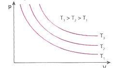Lei de Charles:Desenvolvida por Jacques Charles, essa lei afirma que quando há uma transformação isovolumétrica (isocórica, isométrica) , isto é, com Volume (V) constante, Pressão (p) e Temperatura (T) se alteram de maneira diretamente proporcional, ou seja, o aumento de um implica no aumento do outro, por exemplo.

Lei de Charles e Gay-Lussac: Iniciada por Jacques Charles e concluída posteriormente com Gay-Lussac, essa lei afirma que quando há uma transformação adiabática, isto é, com Pressão (p) constante, Temperatura (T) e Volume (V) se alteram.
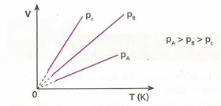Equação de Clapeyron
Paul Emile Clapeyron foi responsável por formular a equação que rege o estudo dos gases ideais, através da síntese de todas as leis já estabelecidas por outros estudiosos anteriormente. Com isso, ele chegou a seguinte equação: Pv = nRT, com R sendo uma constante denominada de “constante universal dos gases perfeitos”, e as outras grandezas sendo as variáveis de estado já expostas.
Sob condições de CNTP (condições normais de temperatura e pressão), isto é T = 273K, p = 1atm e V = 22,4L, obtemos o valor de R, sendo R = 0,082 atm.L/Mol.K. Com isso, chegamos a lei geral dos gases:
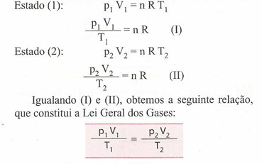
Através dessa equação, também conseguimos entender melhor fenômenos onde há mistura de gases, caracterizado matematicamente pela soma de seus números (N). Logo:
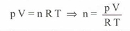
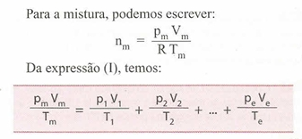
1a Lei da Termodinâmica
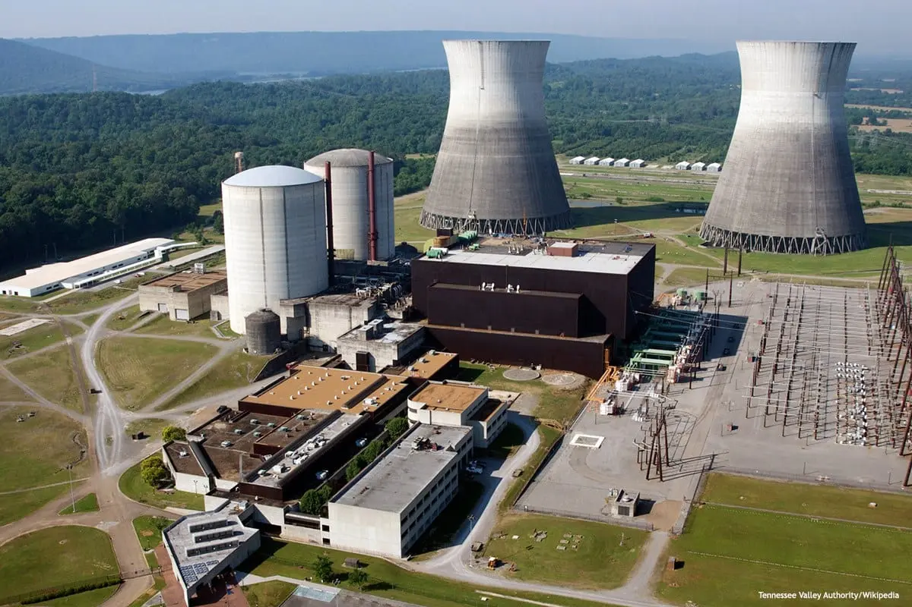Também conhecida como “Princípio da Conservação de Energia”, a 1ª lei da termodinâmica define uma equação responsável pela contabilidade energética em um corpo, através da relação entre os parâmetros enunciados anteriormente, dada por ΔU = Q- t. Com isso, concluímos que a variação de energia interna (ΔU) está intimamente ligada com a diferença entre o calor (Q) recebido ou concedido e o Trabalho (t) recebido ou realizado.
SE LIGA!: O sinal negativo (-) próximo ao valor do trabalho (t) pertence à fórmula, e não a ele! Ou seja, isso não significa que o corpo está recebendo trabalho.
Transformações particulares
Transformação Isotérmica: Quando a temperatura se mantém constante, não há variação de energia interna (ΔU), logo a quantidade de calor (Q) é numericamente igual ao trabalho (t).
ΔU = 0 -> 0 = Q - t -> Q = t
Transformação Isovolumétrica: Quando o recipiente onde o gás se encontra se mantém com volume constante, significa que o gás não recebe nem realiza trabalho (t), logo todo o calor (Q) recebido ou concedido é usado na variação de energia interna (ΔU).
t = 0 -> ΔU = Q - 0 -> ΔU = Q
Transformação Isobárica: Quando a pressão se mantém constante, o trabalho de um corpo passa a depender da variação de volume (ΔV) do recipiente. Por também depender muito do volume (V), percebe-se certa semelhança com a transformação isovolumétrica, no entanto, naquela ocasião a pressão muda, nessa não.
t = p.ΔV -> ΔU = Q - t -> ΔU = Q - p.ΔV
Transformação Adiabática: Ocorre quando não ocorre trocas de calor. Assim, a variação da energia interna (ΔU) depende exclusivamente do trabalho (t) exercido ou recebido.
Q = 0 -> ΔU = 0 - t -> ΔU = - t
Videoaula
Primeira lei da termodinâmica
2a Lei da Termodinâmica
A segunda lei da termodinâmica está intimamente relacionada com os dispositivos conhecidos como “máquinas térmicas” e afirma que é impossível construir uma máquina como essa que, trabalhando em transformações cíclicas, converta toda a energia recebida (Q) integralmente em trabalho (t).
Máquinas térmicas
As máquinas térmicas são aparelhos que operam em ciclos termodinâmicos e que podem transformar parte da energia, que está em forma de calor, em trabalho mecânico. Funcionam através de 2 extremidades: uma quente (“fonte quente”) e outra fria (“fonte fria”), por onde o calor irá percorrer. Também necessita de um fluído operante, colocado entre essas extremidades para sofrer modificações em suas variáveis de estado e realizar trabalho conforme o calor transita. Como já dito no próprio enunciado da segunda lei da termodinâmica, não é possível que haja a transformação integral do calor absorvido em trabalho, ou seja, sempre haverá uma perda, seja na forma de vibração, atrito, ruídos sonoros, entre outras.
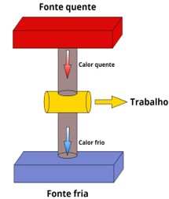Rendimento
As máquinas, no geral, não são perfeitas, portanto, caso seja necessário saber o rendimento exato de um aparelho, basta utilizar da seguinte fórmula:
OBS: o trabalho é justamente a diferença entre o calor cedido pela fonte quente e o calor "desperdiçado" pela fonte fria
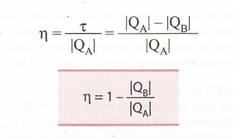- N é o rendimento;
- t é o trabalho mecânico, dado em joules ou calorias;
- Qa é o calor proveniente da fonte quente, também dado em joules ou calorias;
- Qb é o calor recebido pela fonte fria, dado em joules ou calorias.
Teorema de Carnot
O teorema de Carnot indica que mesmo a máquina térmica ideal (aquela que não dissipa nenhuma quantidade de energia em razão do atrito entre os mecanismos) apresenta um limite de rendimento máximo, dependente da razão entre as temperaturas de sua fonte quente e fria, dadas em kelvin: 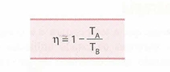
- N é o rendimento;
- Ta é a temperatura da fonte fria;
- Tb é a temperatura da fonte quente.
Analisando a fórmula acima, chega-se à conclusão de que a forma de atingir um rendimento de 100% em uma máquina ideal seria se Tb (temperatura da fonte fria) fosse nula, ou seja, equivale-se a zero kelvin, porém, essa temperatura é inatingível.